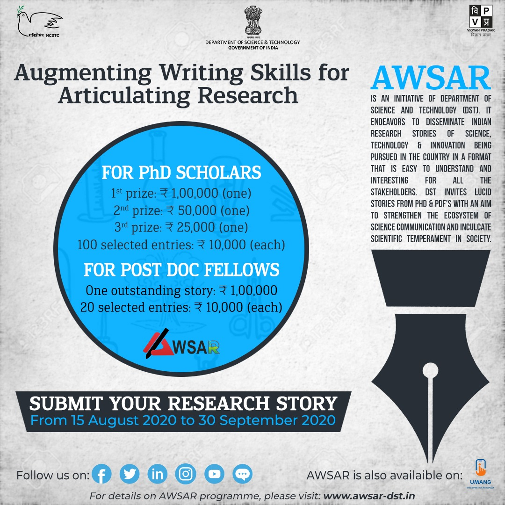

Platforms of Science Communication
Platform of science communications
Media Coverage

Norwegian science meida forskning.no/ covered our research
on craton. Read
the Norwegian Article:
Norge ligger oppå en merkelig og urgammel del av jordskorpa
English article: Norway sits atop a strange and ancient part of the Earth's crust
Public Talks/ video
During my PhD days, I made this video as a part of IEEE-IISc ComSoc Chapter research communication competition. It won the second prize.
A Podcast with Umayer
Geoscience Education

Geoscience Education (GE) is an online platform for writing
science articles (sometimes popular science articles) associated with geological (Earth system sciences-related) facts
(problems) lucidly without diluting the actual scientific content.
GE articles primarily target all those with minimal experience of traditional geoscience education but have a considerable
interest in these subject domains.
GE was an initiative by a few geology graduates and science enthusiasts from 2015-16 onwards. Subhronil, Anupam and me started the
platform. Apart from us, many other subject matter experts and earth science students helped GE to grow bigger with their contributions.
Selected articles:
3.
Geophysics resource tools for students: Self internship
2. Time before plate-tectnics
1.
Why many geology students quit their jobs and return to academia?
European Geoscience Union Blog


I joined as a social media co-ordinator at the European Geoscience Union Geodynamics division team in 2019. In the next year I became a member of EGU GD blog editorial team, which is run by the early career scientists.
Find my author page at EGU Geodynamics
Find my editorial page at EGU Geodynamics
Articles I wrote for EGU GD blogs:
4. Continental drift in academia
3. 2021: 100th year of the craton concept and beyond
2. Geoscience in the third world
1. EGU 2018: Experience of a first time attendee
Articles I edited for EGU GD blogs:
12. Do
lower mantle slabs contribute in generating the Indian Ocean geoid low? by Debanjan Pal
11.
Lithospheric failure at subduction zones by Nicolai Nijholt
10. The Deccan Chronicle: Plume or no-Plume? Perspective from a Deccan dyke swarm by
Ayanangshu Das
9.
Curious case of convex upwards topography in accretionary wedges by
Sreetama Roy
8.
Stellar storms in other worlds: implication to the stability of exoplanetary atmospheres by
Gopal Hazra
7.
The geophysicist's toybox by Adam Beall
6.
Magnetic field generation and its reversal in dynamo models by Debarshi Majumder
5.
Whole solid-Earth numerical simulation: Towards an understanding of mantle-core interactive dynamics by
Masaki Yoshida
4. Modelling the deformation in the Indian plate and the India-Eurasia collision zone
by Srishti Singh
3.
Rayleigh-Taylor instability in geodynamics by Dip Ghosh
2.
Advanced geodynamic models of giant earthquakes by
Thyagarajulu Gollapalli
1.
Understanding intraplate earthquakes by
Attreyee Ghosh
American Geophysical Union: EOS


Plate tectonics, coupled with convection in the mantle, governs the destructive forces applied to Earth's lithosphere,
its topmost layer of rock. Whereas oceanic lithosphere is recycled in subduction zones after a couple of hundred million years
or so, continental lithosphere often survives longer but is still ultimately deformed, eroded, and destroyed by forces exerted
by the underlying convective mantle. Thus, on a tectonically active Earth, rocks older than a few billion years should be rare
to nearly nonexistent.
However, such ancient rock, dating back more than 3 billion years (and perhaps even more than 4 billion years), has been found
in different parts of the world (Figure 1). These very old rocks are known as cratons, from the Greek root word κράτος, meaning
strength. Understanding how cratons have survived for such a long time, some almost since the birth of the planet, remains one of
the grand challenges of geodynamics.
Find the complete article:
Cratons, Why are you still here?
Augmenting Writing Skills for Articulating Research

" Augmenting Writing Skills for Articulating Research (AWSAR)" is an initiative that aims to disseminate
Indian research stories among the masses in an easy to understand and interesting format to a common man.
Under this initiative, PhD Scholars and Post-Doctoral Fellows (PDFs) in Science and Technology (S&T) streams
would be encouraged to write at least one popular science article during the tenancy of their fellowship, and
to participate in a national competition.
I was won AWSAR award in 2019 for the article: How did the Oldest Part of the Earth Still Survive Today?
বাংলায় লেখালেখি

I actively pursue geoscience communication in my language, Bengali. I have articuled many articles on social media, e-magazine and prited
magazines in bengali. Some e-magazine links are given below:
13. জিওলজি জিওলজি এ লেভেলে' বিজ্ঞান
[Link]
12. পৃথিবীতে অক্সিজেনের বিবর্তন:
Review of "Destabilization of deep oxidized mantle drove the Great Oxidation Event",
O'Neil and Aulbach, 2022, Science Advances, Geoscience Education
[Link]
11. ডারউইন বনাম কেলভিন: পৃথিবীর বয়সের খোঁজে Geoscience Education
[Link]
10. পৃথিবীর প্রাচীনতম গ্লোবের খোঁজে Geoscience Education
[Link]
9. দ্বিতীয় মহাযুদ্ধের ডুবোজাহাজ খুঁজতে গিয়ে ধরা পড়লো পৃথিবীর চৌম্বক ক্ষেত্রের দিক পরিবর্তন Geoscience Education
[Link]
8. ডাইনোসরের বিলুপ্তি থেকে হিমালয়ের উত্থান - এক ভূতাত্ত্বিক অভিযান Geoscience Education
[Link]
7. ভারত মহাসাগরের গর্ত: পর্ব ৩: Super plume, 2021, Geoscience Education
[Link]
6. ভারত মহাসাগরের গর্ত: পর্ব ২ (Geoid Anomaly), 2021, Geoscience Education
[Link]
5. ভারত মহাসাগরের গর্ত: পর্ব ১, 2021, Geoscience Education
[Link]
4. লাভার উৎস সন্ধানে, 2021 বিজ্ঞান
[Link]
3. পৃথিবীর প্রাচীন পাথর গুলির জীবনযাত্রা, 2021, September বিজ্ঞান কথা, Vigyan Parisar, Govt. of India p. 14-15
[Link]
2. ব-দ্বীপের বহিঃপ্রকাশ, 2021 এ লেভেলে' বিজ্ঞান
[Link]
1. পৃথিবীর গভীর কথা, 2020 বিজ্ঞান
[Link]
ইতিহাসের লেখালেখি
I am interested in history of geoscience and communicate them in Bengali. Some of the links are given below.
4. মানচিত্রের মল্লযুদ্ধ ২০২৩, ইতিহাস তথ্য ও তর্ক
3. ইহুদি উপাসনালয়ে ইসলামী শৈলী ২০২৩, ইতিহাস তথ্য ও তর্ক
2. ছবিতে ইরানি ছায়া ২০২৩, ইতিহাস তথ্য ও তর্ক
1. কালের যাত্রা ২০২৩, ইতিহাস তথ্য ও তর্ক